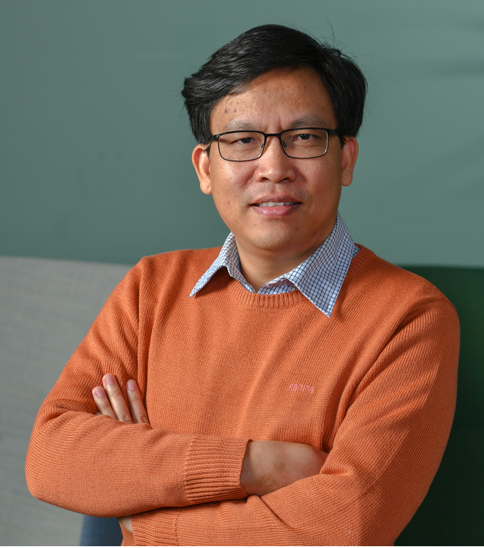

Study with the group
PhD scholarships, what to send, and background reading.
I am Truyen Tran, Professor and Head of AI, Health and Science at the Applied Artificial Intelligence Institute, Deakin University. My group builds AI that can diagnose and care, discover and invent, and asks what happens to science, medicine and society when intelligence becomes abundant.

Three focuses: civilisational AI and the science of intelligence, an AI co-doctor, and an AI co-scientist. Each is built as a system that works with experts in the loop.
Each path leads to a short overview first, then to deeper project pages and papers.
PhD scholarships, what to send, and background reading.
Three research focuses, the systems we build, and routes to partner.
Essays on where AI research and training are heading.
What makes a society of intelligent agents productive and resilient, or unstable? A 2027–2029 programme on the laws, dynamics and institutions of collective intelligence.
A clinical colleague for places where doctors and tests are scarce, starting with a faithful way to measure it: our open diagnostic panel, and earlier recognition of childhood cancer in Vietnam.
A research colleague that proposes ideas, checks them against prior art, and runs experiments, tested against strong non-AI methods on data it has never seen.
An embodied architecture for intelligence, a multi-expert agent environment, and AI-native research operations.
An open sequential-diagnosis panel with an auditable evaluation, extending to paediatric cancer in Vietnam.
Idea generation with prior-art gates, agent-versus-search tests under sealed evaluation, and materials generation.
The work spans a decade-scale question and near-term systems. There is room for ambitious people and organisations.
PhD students and postdocs who want to work on AI co-doctors, AI co-scientists, and the science of collective intelligence, with AI as part of the research team.
PhD scholarshipsHospitals, health agencies, research labs and industry with a hard problem, real data and a reason to move now.
Partnership routesFunders and strategic sponsors who want to back a multi-year programme in frontier AI for health, science and society.
Support the programme